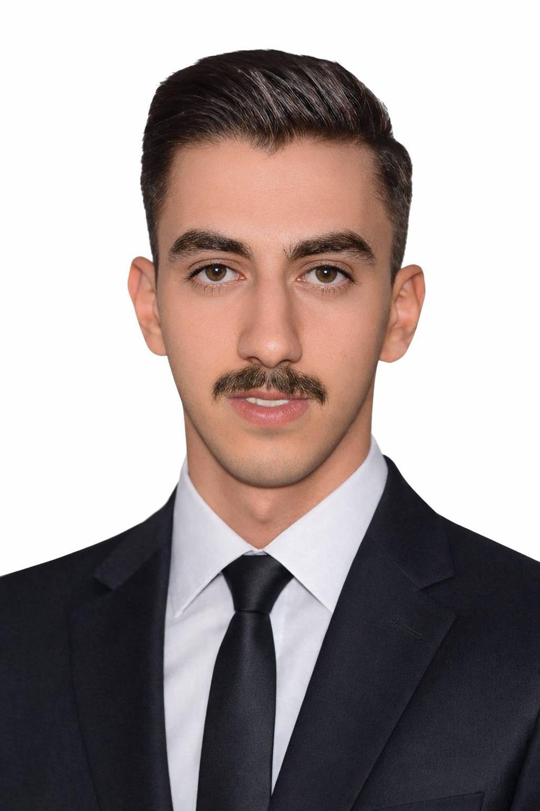

Cybersecurity specialist focused on log analysis, threat detection, network monitoring, and attack simulation. Strong background in authentication analysis and endpoint telemetry investigation.

23-year-old cybersecurity enthusiast based in Amman, Jordan. Passionate about technology, system optimization, and competitive gaming. Strong technical foundation built through years of hands-on experience with PC hardware and Windows systems.
Developed a Machine Learning-based detection system to identify Man-in-the-Middle attacks in a controlled local network environment.
Designed and implemented a network packet sniffer to monitor and analyze suspicious traffic behavior within local networks.
Built multiple lab environments to simulate brute-force attacks, password spraying, and suspicious PowerShell activity.